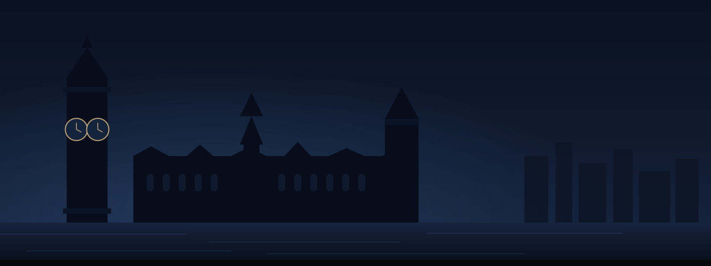

LSE investors & traders
- You invest in UK shares
- You can't watch the market all day
- You like finding overlooked opportunities
- You're comfortable doing your own research
- You think in weeks, months or longer
Overlooked today. Opportunity tomorrow.
CrashDash searches the UK market for beaten-down, overlooked and misunderstood stocks — so you can investigate earlier.
Free during beta LSE only, for now Limited early access
Searches the UK market for unusual situations.
Let CrashDash do the initial searching.
Know when something deserves a closer look.
A starting point for deeper investigation.
The difference
We help you find fewer stocks worth watching.
CrashDash narrows the UK market down to a shortlist of situations that may be worth your time — then shows you what changed.
Less screening. More investigating.
Not another stock screener
Most screeners hand you hundreds of stocks and leave you to work through them. CrashDash takes a more selective, contrarian approach.
Before
Unnoticed
After
Worth a closer look
Same stock. A different perspective.
How it works
The interesting time isn't always when everyone is talking about a stock. Sometimes it's when almost nobody is.
The full loop
Alert. Investigate. Decide.
Alert timing and delivery details are covered in your onboarding material.
Selective by design
Built for people who research individual companies and would rather see a shortlist than a flood.
CrashDash is not for everybody. The wrong user should be able to self-select out — that is deliberate.

The interesting time isn't always when everyone is talking about a stock. Sometimes it's when almost nobody is.
Patience finds opportunity.
Built around your week
CrashDash watches for interesting situations. You investigate when something deserves attention.
Why CrashDash?
A short introduction to the idea behind CrashDash.
CrashDash LSE private beta
We're opening CrashDash to a small group of UK investors and traders. Use it, test it, and help shape what comes next.
Applications are reviewed manually, in small batches.
Joining the beta list does not create an account, and no personal data is processed by this website.
Fewer than a screener, and that is the point. CrashDash is designed to narrow the market, not to flood you with it.
No. It surfaces candidates and shows you what changed. The investigating and the decision stay with you.
No. CrashDash is a market-discovery and research tool. It is not regulated advice and it is not a recommendation.
UK-listed companies that may be beaten down, overlooked, misunderstood, out of favour, or beginning to change.
AI-assisted analysis supports parts of the research process. It does not choose what you look at, and it does not tell you what to do.
No. CrashDash is built for people who cannot watch markets all day. You should be able to catch up in the evening and still have something worth reading.
Requests are handled manually. This website collects nothing itself — it holds no accounts, no analytics and no cookies.